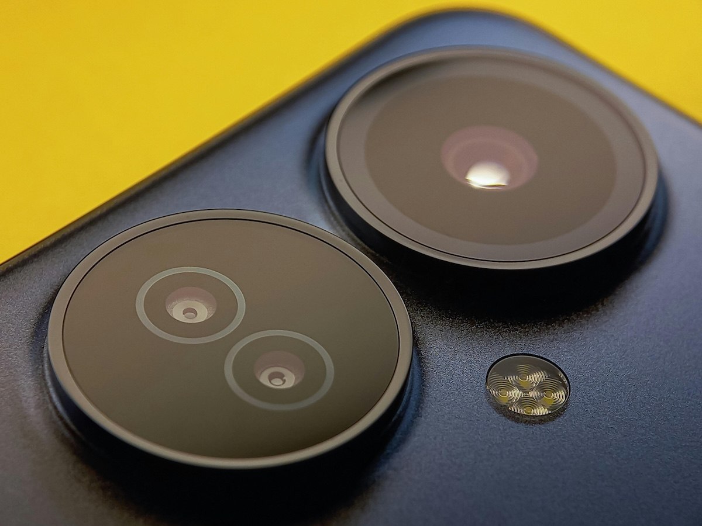

Telefonların Lensleri Kaç mm’dir? Telefon Kamerası ile İnsan Gözü Karşılaştırması

Akıllı telefon kameraları her yıl gelişiyor, ancak birçok kişinin aklındaki temel soru değişmiyor: Telefonların lensleri kaç mm’dir ve bu değer neyi ifade eder? Bu yazıda telefon lenslerinin odak uzaklığını, gerçek mm değerlerini, eşdeğer kavramını ve insan gözüyle farklarını detaylı şekilde ele alıyoruz.
Telefon Lenslerinde “mm” Ne Anlama Gelir?
Fotoğrafçılıkta mm (milimetre), odak uzaklığını (focal length) ifade eder. Bu değer:
- Görüş açısını belirler
- Kadrajın ne kadar geniş ya da dar olacağını gösterir
- Perspektifi etkiler
Ancak telefonlarda gördüğünüz mm değeri çoğu zaman gerçek fiziksel odak uzaklığı değil, 35mm eşdeğer odak uzaklığıdır.
Neden Eşdeğer Kullanılır?
Telefon sensörleri çok küçük olduğu için gerçek odak uzaklığı da çok küçüktür. Bu nedenle üreticiler karşılaştırmayı kolaylaştırmak için 35mm full frame eşdeğerini verir.
Telefon Kameralarının Tipik mm Değerleri
Günümüzde çoğu akıllı telefonda birden fazla lens bulunur. İşte yaygın odak uzaklıkları:
1. Ultra Geniş Açı Lens
- Eşdeğer: 12–16 mm
- Görüş açısı: Çok geniş
- Kullanım: Manzara, mimari, kalabalık sahneler
Özellik: Kenarlarda perspektif bozulması olabilir.
2. Geniş Açı (Ana Kamera)
- Eşdeğer: 23–26 mm
- Görüş açısı: Doğala yakın geniş açı
- Kullanım: Günlük çekimler, sokak fotoğrafçılığı
Bu lens telefonun ana kamerasıdır.
3. Telefoto Lens
- Eşdeğer: 50–120 mm (modele göre değişir)
- Görüş açısı: Dar
- Kullanım: Portre, uzaktaki objeler
Avantaj: Arka planı sıkıştırır, daha estetik portre verir.
4. Periskop Telefoto (Bazı Modellerde)
- Eşdeğer: 120–240 mm
- Kullanım: Yüksek optik zoom
Telefon Lenslerinin Gerçek mm Değeri
İşin teknik kısmı burada başlıyor.
Telefonlarda:
- Sensör küçük
- Lens fiziksel olarak çok kısa
- Bu yüzden gerçek odak uzaklığı genelde: 4 mm – 8 mm civarıdır
Örneğin:
- 24 mm eşdeğer ana kamera
- Gerçek odak uzaklığı ≈ 5–6 mm
Yani telefonda gördüğünüz mm değeri, full frame karşılığıdır, gerçek fiziksel ölçü değildir.
İnsan Gözü Kaç mm’dir?
Fotoğrafçılıkta insan gözü genellikle: 43–50 mm full frame eşdeğer
olarak kabul edilir.
Ancak bu basitleştirilmiş bir yaklaşımdır. Çünkü insan gözü:
- Sabit odaklı değildir
- Beyin görüntüyü işler
- Görüş alanı çok geniştir
- Odak dinamik olarak değişir
Teknik Karşılık
- Retina odak uzaklığı ≈ 17 mm
- Algısal karşılık ≈ 43–50 mm
Telefon Kamerası vs İnsan Gözü
Görüş Açısı
Telefon ana kamera (24 mm):
- İnsan gözünden daha geniş
- Daha fazla alan gösterir
- Kenarlarda perspektif abartısı yapar
İnsan gözü (~50 mm):
- Daha doğal perspektif
- Nesneleri daha gerçek oranlarda görür
Perspektif Algısı
Telefonla yüz çektiğinizde neden burun büyük çıkar?
Sebep odak uzaklığıdır.
- 24 mm → perspektif abartır
- 50–85 mm → portre için idealdir
Bu yüzden profesyonel portreler genelde: 85 mm civarında çekilir.
Alan Derinliği (Bokeh)
İnsan gözü:
- Çok gelişmiş odaklama yapar
- Arka planı doğal bulanık görür
Telefonlar ise:
- Küçük sensör nedeniyle doğal bokeh üretmekte zorlanır
- Bu yüzden yazılımsal portre modu kullanır
Işık Toplama Performansı
İnsan gözü:
- Karanlığa müthiş adapte olur
- Dinamik aralığı çok yüksektir
Telefon:
- Yazılımla telafi eder
- HDR ve gece modu kullanır
Neden Telefonlar Genelde 24 mm?
Bunun üç nedeni var:
- Çok yönlü kullanım: Hem manzara hem günlük çekim için uygundur.
- Küçük sensör gerçeği: Daha dar açı kullanıcıyı zorlar.
- Kullanıcı alışkanlığı: Sosyal medya için geniş kadraj tercih edilir.
Hangi mm Hangi Çekim İçin İdeal?
- 13 mm → manzara
- 24 mm → günlük kullanım
- 35 mm → sokak fotoğrafçılığı
- 50 mm → doğal görünüm
- 85 mm → portre
- 120 mm+ → uzaktaki detaylar
Sonuç
Akıllı telefonlarda gördüğünüz mm değeri, lensin gerçek fiziksel uzunluğunu değil, 35mm eşdeğer görüş açısını ifade eder. Telefonların ana kameraları genellikle 24–26 mm eşdeğer aralığındadır ve bu değer insan gözünün algısal karşılığı olan 43–50 mm’den daha geniştir.
Bu yüzden telefonla çekilen fotoğraflar bazen gerçek hayata göre daha geniş ve perspektif olarak abartılı görünür. Daha doğal portreler için ise telefoto lenslerin (50–85 mm eşdeğer) kullanılması çok daha doğru sonuç verir.